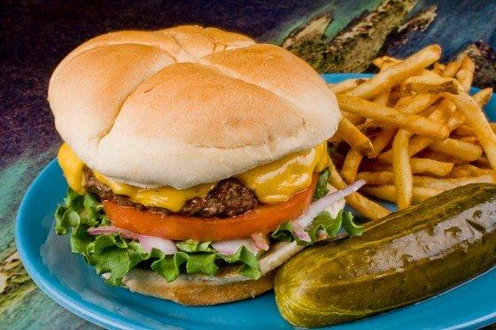

Cheeseburger in Paradise

Description
A take on Jimmy Buffett's famous burger.
What You'll Need
28 ounces beef chuck, diced
8 slices of American cheese
4 slices of tomato 1/4-inch thick
4 slices red onion, 1/4-inch thick
2 pounds of potatoes, peeled, cut into fries and fried until golden brown
How to Make It
- Using a meat grinder with a 3/8-inch plate, grind the meat. Change to a 1/8-inch plate, and grind a second time. Shape the ground meat into 4 (7-ounce) patties.
- In a mixing bowl, combine the kosher salt, pepper, garlic salt, onion salt and celery salt. Mix well.
- Place burger on a hot grill and season with the seasoning salt. Cook the burgers halfway to desired temperature and flip over and finish cooking. Place cheese on the burger when it is 3/4 of the way cooked and melt.
- Place bottom bun on plate. Place burger on bottom bun. Place lettuce, tomato and onion on top of the burger. Cover with top bun and secure with a toothpick. Place pickle next to the burger. Place fries on the plate.